Introduction
If you have some video you'd like to tidy up (clips from a phone, the school play, something for the club's website), ReelEdit lets you do it on RISC OS. You can cut out the dull bits, put clips in order, add music and titles, and save the result as an MP4 that plays anywhere.
About this guide
The guide comes with ReelEdit, and you can open it from the program: press F1 in the editor, or choose User guide from the icon bar menu or the main menu. It opens in your web browser (NetSurf, for example). The file itself is !ReelEdit.Guide.index/html, if you'd rather open it yourself.
You don't need to read it in order. If all you want is a title, go to Chapter 13. If you're new to video editing, start at Part I and do the Try it examples as you go. By the end of Part II you'll have made your first edit.
The pictures are screenshots of ReelEdit running on RISC OS. The test clips are colour bars with a moving line across them, which makes it easy to see which frame you're on.
This is a beta version
ReelEdit 0.3 is a beta: everything in this guide works, but it's still being tested, and you may come across bugs. Save your work often (ReelEdit also keeps a backup, see Chapter 17). If something goes wrong, the most useful thing you can send with your report is a log of what happened. Logging is off as standard, so turn it on first; Chapter 2 shows you how.
What we assume you know
Not much. You should know the three mouse buttons (Select on the left, Menu in the middle, Adjust on the right), and how to drag a file from a Filer window into a program. You don't need to know anything about video.
The boxes in this guide
Where to start
If ReelEdit isn't installed yet, start at Chapter 2. If it is, go to Chapter 3. The Appendix lists every key and menu on one page; it's worth printing.
Part I: Getting StartedInstalling ReelEdit and finding your way round
1 What ReelEdit does
ReelEdit is a non-linear video editor, which means you can work on any part of your film in any order. You can shorten one clip, slip another into the middle, put music under the whole thing and change your mind as often as you like.
Your video files are never changed. A ReelEdit project is just a list of which parts of which files go where. A new video file is only written when you export.
What you can do with it
- Cut and arrange: split clips, trim them, move them, delete them. Undo goes back 100 edits.
- Fades, dissolves and wipes between clips.
- Colour: looks such as black and white or sepia, and sliders for brightness, warmth and more.
- Sound: mute a clip, fade its sound or change its volume, clean it up (rumble, hiss between words), even out the levels, and add music and sound effects on separate audio tracks.
- Overlays: a logo in the corner, a second video in a small box (picture in picture), a picture over the whole frame, or a green screen.
- Titles in RISC OS fonts.
- Slow motion, fast motion and reverse, freeze frames, and pan and zoom across photos.
- Colour clips of black or any of nine colours.
- Editing tools from the professional editors: marks, three-point editing, rolling edits, copy and paste.
- Help with smooth playback: render previews, and proxies (small working copies of big files) made for you automatically.
- Export to MP4, using the Raspberry Pi's hardware encoder when it's available.
What you need
| You need | Because |
|---|---|
| RISC OS 5 on a Raspberry Pi 2, 3 or 4 (ARMv7 with VFP) | ReelEdit is built for these processors. |
| SharedUnixLibrary 1.16 or later, and ARMEABISupport | ReelEdit uses them. You can get both through PackMan. ReelEdit checks for them when it starts. |
| SharedSoundBuffer and StreamManager (ssb.zip), with SharedSound | For sound. Without them you get the picture but no sound. |
The VideoOverlay module (supplied with RISC OS 5 in !System) | To show the picture through the Pi's video hardware while playing. Without it the picture is drawn in the window, which is slower. |
gpu_mem=128 in the Pi's config.txt | Gives the Pi's graphics processor (the VideoCore) enough memory to decode 1080p and to encode when you export. |
2 Installing and starting
- Unzip the ReelEdit archive with SparkFS or !Unzip, and copy !ReelEdit to where you keep your applications.
- Double-click !ReelEdit. Its icon, a film reel, appears on the right of the icon bar.
- Click the icon. The editor opens with a new, empty project.
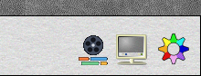
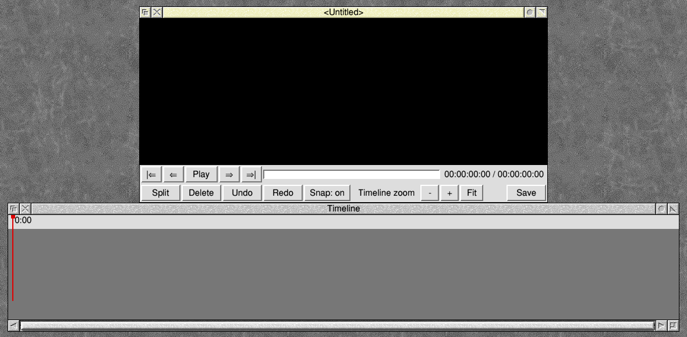
The icon bar menu
Press Menu over the icon for these:
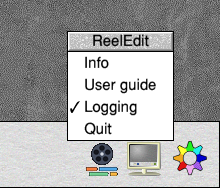
- Info tells you which version you have.
- User guide opens this guide in your web browser.
- Logging turns the log on or off. A tick means it's on. ReelEdit remembers your choice the next time it starts.
- Quit quits ReelEdit. If you have unsaved changes, it asks first.
Turning on logging
Logging is off as standard. When it's on, ReelEdit writes a note of everything it does (each edit, how each clip is being decoded, how smoothly it's playing) to a file called ReelEditLog in the scrap directory, <Wimp$ScrapDir>. You don't need it for everyday use, but if you have a problem, it shows the author what happened.
- Press Menu over the ReelEdit icon and choose Logging.
- Do whatever caused the problem again.
- Send the file
<Wimp$ScrapDir>.ReelEditLogwith your report. (To find it, typeFiler_OpenDir <Wimp$ScrapDir>at the command line, which you get by pressing F12, or press Ctrl-F12 for a task window.) - Choose Logging again to turn it off.
3 Finding your way round the screen
It's worth spending a few minutes on this chapter before you start editing.
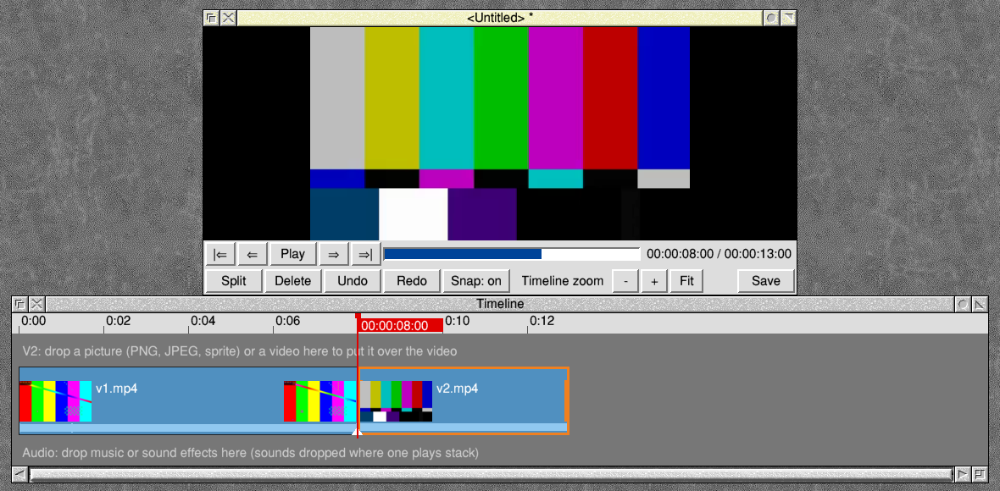
The Viewer
The top window is the Viewer. It shows the frame under the playhead, the red line on the Timeline that marks where you are. Below the picture are the transport controls:
| Button | What it does |
|---|---|
| |< | Go to the start. |
| <= and => | Back or forward one frame. Click with Adjust to move a second. |
| Play | Play, or stop if already playing. The Space bar does the same. |
| =>| | Go to the end. |
| The bar | Where you are in the project. Click or drag in it to jump. |
| The time | The playhead's position (hours:minutes:seconds:frames) and the length of the project. |
Under those is a row of buttons: Split, Delete, Undo, Redo, Snap, the Timeline zoom buttons (-, + and Fit) and Save. To find out what any of them does, run !Help (it's in Apps) and point at it.
The Timeline
The lower window is the Timeline. Your film runs from left to right. From the top down:
- The ruler shows the time. Click it to move the playhead; drag along it to scrub through the frames. A thin coloured bar just under it shows render previews (Chapter 16).
- The titles row appears at the top once you make a title (Chapter 13). Titles are shown on top of everything else.
- V2, the overlay track, holds logos, pictures and picture-in-picture videos. Anything on V2 is shown on top of V1.
- V1 is the main track, with your clips one after another. Each clip shows its first frame (and its last, if there's room), its name, and its sound as a light blue waveform along the bottom.
- Audio tracks (A1, A2 and so on) appear under V1 when you add music or sound effects. There's always an empty row at the bottom to drop more on to.
Until you've used a track, it shows a line of text saying what to drop there.
The Inspector
To the right of the Viewer is the Inspector. It shows the settings of whatever you've selected on the Timeline, so you can change them while you watch the picture:
- for a clip: its colour (Chapter 10), on its Sound tab its sound (Chapter 11), and on its Motion tab pan and zoom (Chapter 14);
- for a logo, picture or title: where it goes, its size and how see-through it is (Chapter 12). A video with sound has a Sound tab too;
- for a sound on an audio track: its volume and clean-up.
Click a tab's name at the top of the Inspector to change pages.
Click or drag along a slider to set it; click a button such as Look or Place for a menu. Press Ctrl-I (or choose View > Inspector) to close it if you want the room, and again to bring it back. It moves with the Viewer.
The menus
Press Menu over the Viewer or the ruler for the main menu. Press Menu over a clip, an overlay or a sound for a menu about that one item.
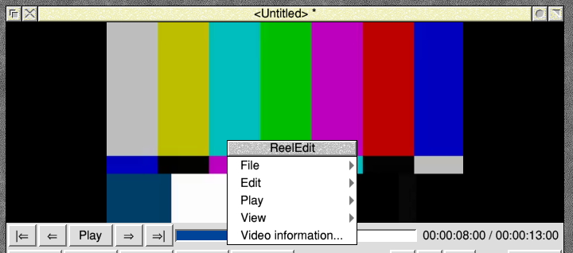
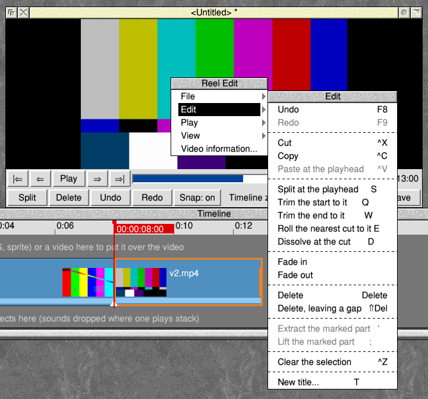
Part II: Editing BasicsGetting clips in, getting about, and making your first cuts
4 Adding clips
To add a clip, drag a video file from a Filer window to one of these places:
| Drop it on | Where it goes |
|---|---|
| The Viewer | The end of the project. |
| The icon bar icon | The end of the project. The editor opens if it isn't open already. |
| V1 on the Timeline | Where you drop it: in front of the clip you drop it on, or after that clip if you drop it nearer its end. |
- Click the ReelEdit icon to open an empty project.
- Drag a video from a Filer window on to the Viewer. It appears on V1, and its first frame appears in the Viewer.
- Drag a second video on to the Viewer. It goes after the first.
- Press Space to play, and Space again to stop.
What you can drop
- Video files that FFmpeg can read, including MP4 and MOV (H.264 or HEVC), MKV, WebM, AVI and MPEG. The Pi's VideoCore decodes H.264 up to 1080p. For other kinds of video ReelEdit makes a proxy so that it plays smoothly (Chapter 16).
- Pictures (PNG, JPEG and sprite files). On V1 a picture becomes a 5-second clip; on V2 it becomes an overlay (Chapter 12).
- Sound files (WAV, MP3, AAC, Ogg, FLAC). Drop these on the audio rows (Chapter 11).
- A project (MLT XML, from ReelEdit, Shotcut, Kdenlive or melt), which is opened.
.m2v) and raw H.264. ReelEdit reads these right through first to find out. While it does, "Measuring" and its progress appear next to the transport controls, and you can carry on using the desktop. Escape cancels it. Anything else you drop in the meantime is added afterwards.5 Playing and moving about
Playing
| Key | What it does |
|---|---|
| Space | Play or stop. |
| L | Play forwards. Press it again for double speed, and again for four times. |
| J | Play backwards, faster each time you press it. |
| K | Stop. |
| Escape | Stop. (It also takes you back from a source clip; see Chapter 15.) |
Moving the playhead
| Key | Moves to |
|---|---|
| Left / Right | The previous / next frame. |
| Shift-Left / Shift-Right | A second back / forward. |
| Up / Down | The previous / next cut (the start of a clip). Down goes to the end if there are no more cuts. |
| Home / Copy | The start / the end. (Copy is the End key on some keyboards.) |
| Click the ruler | Where you click. Drag along the ruler to scrub. |
Zooming the Timeline
+ zooms in, - zooms out, and Shift-Z (or \, or the Fit button) fits the whole project in the window. Hold Ctrl and turn the scroll wheel to zoom in or out around the pointer. The scroll wheel on its own scrolls sideways.
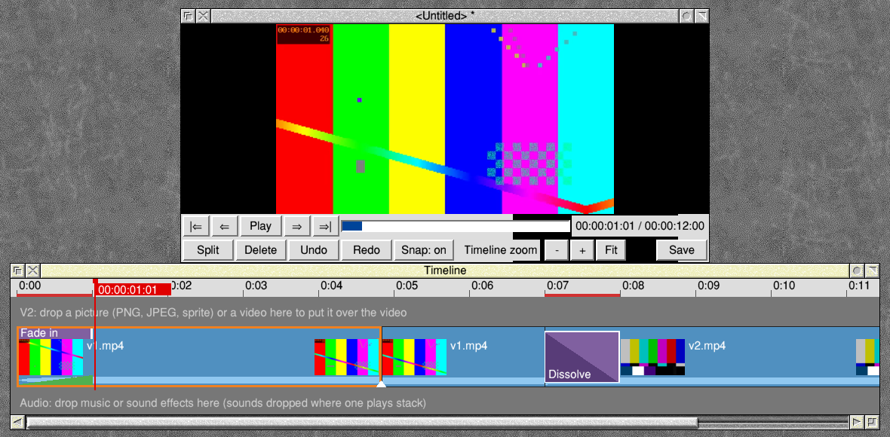
Snapping
When snapping is on, the playhead jumps to a cut if you click or drag near one, so you land exactly on the first frame of a clip. Press N or click Snap to turn it on or off.
6 Cutting, trimming and moving
These are the edits you'll use most.
Selecting
Click a clip to select it. It gets an orange outline, with orange handles at each end. Ctrl-Z clears the selection.
Splitting
Move the playhead to where you want the cut and press S (or click Split). The clip becomes two, and you can trim, move or delete each part.
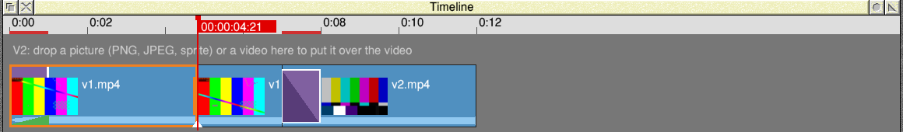
Trimming
There are three ways to trim a clip:
- Drag one of its ends. The Viewer shows the frame at the end as you drag. Everything after the clip moves up or along so there's no gap. This is called a ripple trim.
- Q cuts off the part of the clip before the playhead.
- W cuts off the part of the clip after the playhead.
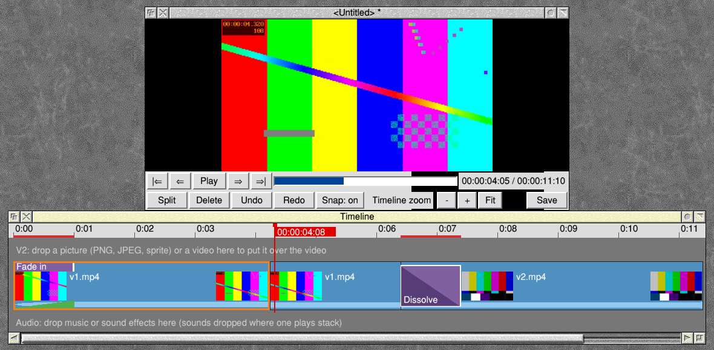
Moving
Drag a clip by its middle, well away from its ends (near an end you'll trim it instead). A white line shows which cut it will go to, and it goes there when you let go.
Deleting
Delete (or the Delete button) removes the selected clip, and the clips after it move up to fill the space. Shift-Delete (or clicking Delete with Adjust) leaves a black gap instead.
Rolling a cut
Sometimes the two clips on either side of a cut are fine, but the cut itself is in the wrong place. A roll moves the cut: one clip gets longer by exactly the amount the other gets shorter, so nothing else on the Timeline moves.
- Move the playhead to where you want the cut and press E. The nearest cut moves to the playhead.
- Or hold Ctrl and drag the end of a clip. The cut moves as you drag.
Undo and Redo
F8 undoes your last edit and F9 redoes it. You can undo up to 100 edits. A drag counts as a single edit, however far you drag.
- With two clips on V1, play the first, stop where it gets interesting and press Q.
- Play on, stop a couple of seconds before its end and press W. The first clip now has spare frames at its end.
- Press Down to go to the cut, then Shift-Right to move a second into the second clip, and press E. The cut moves to the playhead and the project stays the same length.
- Press F8 three times to undo all of this, and F9 three times to redo it.
7 Marks, extract and lift
Marks let you work on a stretch of the project rather than a single clip. Press I to set the in mark at the playhead, and O to set the out mark. The frame at the out mark is included. The marked stretch is shaded pale blue on the ruler, with blue lines down through the track.
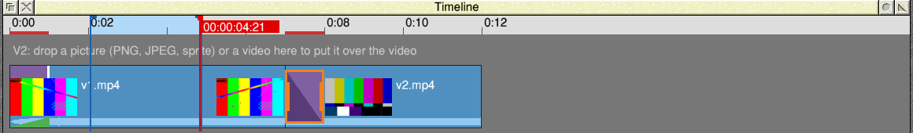
| Key | What it does |
|---|---|
| I / O | Set the in / out mark at the playhead. |
| Shift-I / Shift-O | Go to the in / out mark. |
| Return | Play from the in mark to the out mark. |
| ' (Extract) | Remove the marked stretch and close up the gap. |
| ; (Lift) | Remove the marked stretch and leave a gap. |
| Play > Clear the marks | Remove both marks. |
8 Cut, copy and paste
Select a clip, an overlay or a sound, then:
- Ctrl-C copies it, with its settings: fades, mute and volume, and for an overlay its position, size and opacity.
- Ctrl-X copies it and then deletes it.
- Ctrl-V pastes it at the playhead. A clip is inserted there, and the clips after it move along. An overlay goes on V2, a title on the titles row, and a sound on an audio track.
After pasting, the new copy is selected and the playhead is at its end, so pressing Ctrl-V again puts another copy straight after it.
Part III: Pictures and SoundTransitions, sound, overlays, titles and speed
9 Fades, dissolves and wipes
Fades and dissolves are all most films need; wipes are there for when you want something bolder.
Press Menu over a clip to see its menu:
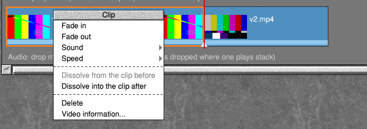
Fades
Fade in fades the clip up from black over its first second, and Fade out fades it down to black over its last second. The sound fades too. A tick shows which fades a clip has; choose the item again to remove the fade. A fade shows as a purple box along the top of the clip. To make it longer or shorter, drag the white edge of the box.
Dissolves
A dissolve (sometimes called a crossfade) blends the end of one clip into the start of the next. There are three ways to make one:
- Press D for a one-second dissolve at the cut nearest the playhead.
- Choose Dissolve from the clip before or Dissolve into the clip after from a clip's menu.
- Drag the small white triangle at the bottom of a cut. The dissolve is as long as your drag.
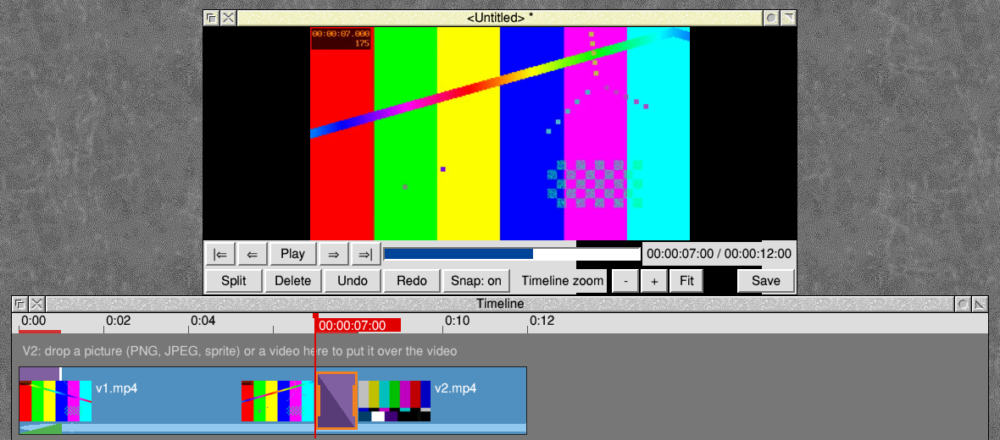
Drag either end of a dissolve to change its length. To remove it, press Menu over it and choose Delete; the clips go back to their original lengths.
Wipes
A dissolve doesn't have to fade the whole picture at once. Click a dissolve on the Timeline to select it, and the Inspector shows its Transition. Choose a wipe from that menu: Wipe from the left, Wipe from the top, Barn doors, Diagonal, Circle, Box or Clock. The next clip then comes in by that shape.
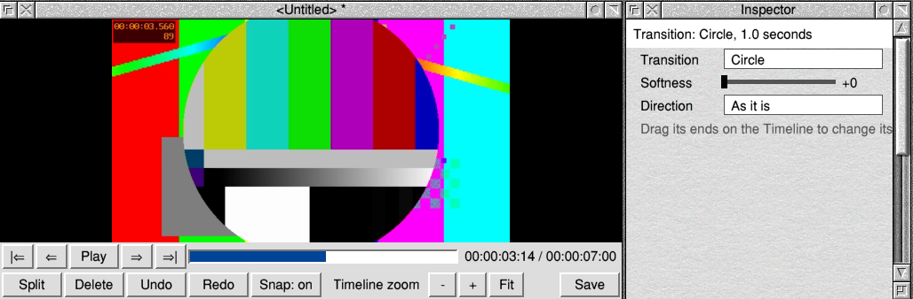
- Softness blurs the edge of the shape. At 0% the edge is sharp; turn it up for a gentler change.
- Direction runs the wipe the other way round: a circle that closes in instead of opening out, or a wipe from the right.
Choose Dissolve from the menu to go back to a plain dissolve. To change how long a wipe takes, drag its ends on the Timeline as you would a dissolve's.
%luma01.pgm and so on, as Shotcut names them). MLT draws the shape itself, so there are no extra files.10 Colour and looks
In this chapter: making a clip brighter, warmer or black and white, in the Inspector, and putting in clips of plain colour.
Select a clip on the Timeline and its colour settings appear in the Inspector, to the right of the Viewer (Chapter 3):
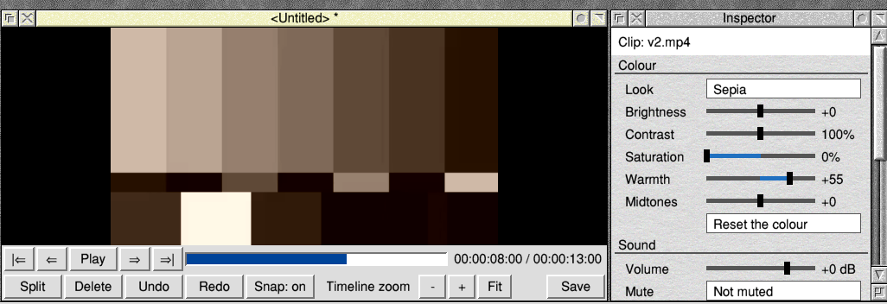
Looks
The quickest way to change a clip's colour is a look. Click the button next to Look and choose one:
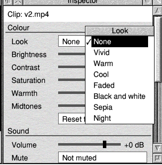
| Look | What it does |
|---|---|
| None | The clip as it was filmed. |
| Vivid | Stronger colours and a little more contrast. |
| Warm | A little redder: good for faces, sunsets and indoor shots. |
| Cool | A little bluer. |
| Faded | Softer contrast and paler colours, like an old print. |
| Black and white | No colour, with a little more contrast. |
| Sepia | Brown and white, like an old photograph. |
| Night | Darker and bluer, for "day for night". |
Adjusting it yourself
Each slider can be clicked or dragged. The Viewer shows the change as you drag, and the whole drag counts as one edit, so F8 undoes it in one go.
| Slider | What it does |
|---|---|
| Brightness | Lighter or darker all over. |
| Contrast | More or less difference between the light and dark parts (100% is as filmed). |
| Saturation | Stronger or paler colours. 0% is black and white. |
| Warmth | Redder (to the right) or bluer (to the left), to correct a colour cast or set a mood. |
| Midtones | Lightens or darkens the middle greys and leaves black and white alone. Good for a dark clip that looks muddy with Brightness alone. |
Once you've moved a slider, the Look button shows "Your own". Reset the colour puts the clip back as it was filmed.
lutyuv filter on the clip (avfilter.lutyuv in the project file, marked shotcut:filter=reeleditColour). It works in the same picture format the Viewer uses, so each pixel costs one look-up in a table: on the testbed a Sepia clip still played at 13 to 29 milliseconds a picture. ReelEdit's copy of MLT has a fix so that FFmpeg's filters work with the FFmpeg 5.1 that RISC OS has.Special effects
Under the sliders, Effect is a menu of three bolder changes:
- Negative turns the picture into its negative: light parts dark, and each colour its opposite.
- Sketch turns the picture into a drawing: dark lines where the edges are, on white.
- Posterise makes every part of the picture black or white, with no greys.
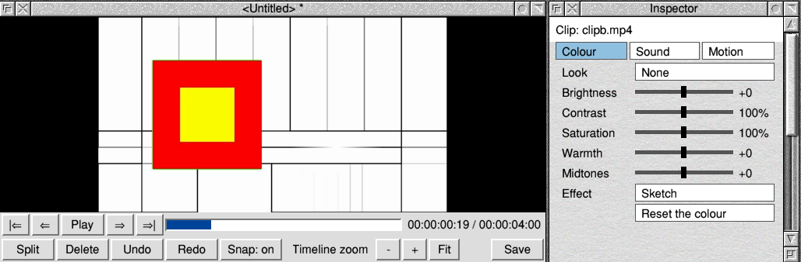
A clip has one effect at a time, as well as its colour settings. Choose None to take it off. (Reset the colour leaves the effect alone.)
Colour clips
A plain colour fills a gap nicely: black before a title, or a colour behind some words. Put the playhead where you want it and choose Edit > Colour clip at the playhead. A black clip two seconds long goes in there and is selected. Choose its colour from Fill in the Inspector:
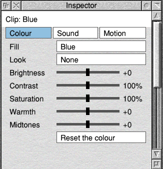
Trim a colour clip to any length, as you would a picture. To put a title on one, add the title over it (Chapter 13).
11 Sound
A clip's own sound
The Sound submenu on a clip's menu works on the sound alone:
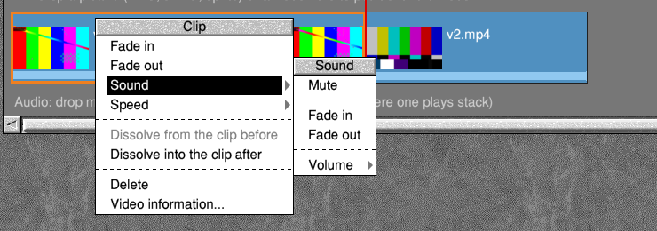
- Mute silences the clip. A red line along the bottom of the clip shows it's muted.
- Fade in and Fade out fade just the sound over a second, leaving the picture alone. They show as green wedges.
- Volume sets the level, from +12 dB down to −36 dB. The setting appears after the clip's name, for example "(−6 dB)".
Music and sound effects
Drop a sound file, or a video whose sound you want, on the audio row under V1. It goes on track A1, starting where you dropped it. If you drop another sound where one is already playing, it goes on the track below, so you can layer sound effects. ReelEdit adds tracks as you need them.
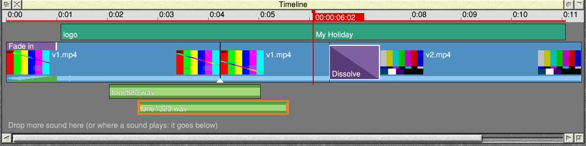
Drag a sound by its middle to move it, or by its ends to trim it. Press Menu over it for its menu:
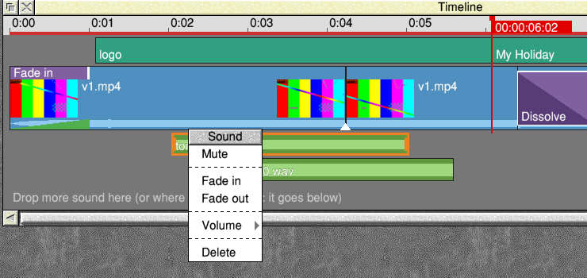
Cleaning up the sound
Select a clip and click Sound at the top of the Inspector. (For a sound on an audio track there's only the one page.) As well as Volume and Mute you'll find:
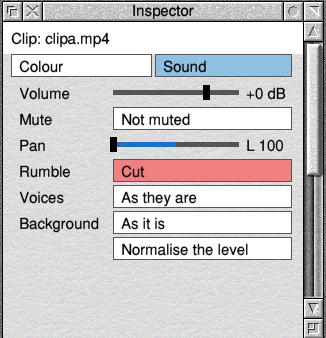
- Pan moves the sound to the left or right. The middle is where it was recorded.
- Rumble cuts the low sounds below about 100 Hz: wind on the microphone, traffic, the camera being handled.
- Voices lifts the range where speech is clearest, so people are easier to understand.
- Background turns down the quiet stretches between words, where hiss and room noise are most noticeable.
- Normalise the level sets the Volume so that the loud parts come to just below the top. It works from the waveform, so wait for that to be drawn first.
To even out a whole film, choose Edit > Normalise all the sound. That does every clip and every sound on the audio tracks in one go, and one Undo puts them all back.
Evening out the loudness as it plays
Normalising sets each clip's level once. If the sound gets louder and quieter within a clip, ReelEdit can keep adjusting it while the film plays. Click an empty part of the Timeline (or press Ctrl-Z) so that nothing is selected. The Inspector then shows the settings for the whole film:
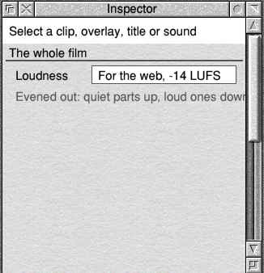
- As it is leaves every clip as loud as it is.
- For the web, -14 LUFS evens the sound out to the level YouTube and similar sites play at.
- For TV, -23 LUFS is the broadcast level. It's quieter, with more room for loud moments.
ReelEdit measures the sound over the last few seconds and turns it up or down gradually: by no more than 3 dB a second, and 15 dB in all. It works as you play, and the export uses it too.
dynamic_loudness filter on the whole project, measuring the loudness as EBU R128 does. It comes from MLT's plus module, which this version of ReelEdit is the first to include.12 Logos and picture in picture
Anything on V2 is shown on top of V1. Drop a picture (a PNG, which can have transparent parts, a JPEG or a sprite file) or a video on the V2 row, at the point where you want it to start.
- A picture at least half the width or half the height of the frame fills the whole frame. A smaller picture goes in the top right corner, as a logo. Either way it's shown for 5 seconds; drag its ends to change that.
- A video appears in a small box in the bottom right, a third of the frame's size, and its sound is mixed with V1's. It's shortened if it would run past the end of the project.
- A sprite file containing more than one sprite gives you a menu to choose from. The sprite you choose is saved as a PNG next to the sprite file; keep it with your project.
Overlays on V2 can't overlap. If you drop one on top of another, it starts where the other one ends. Titles have a row of their own, so a title can go over a logo or a picture in picture (Chapter 13).
Press Menu over an overlay for its menu:
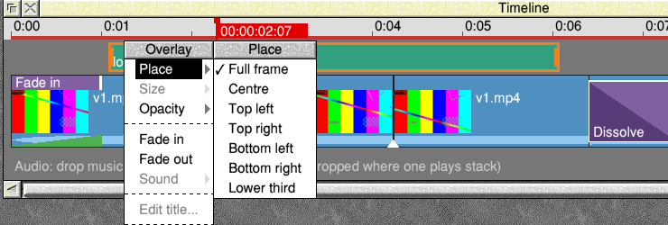
| Item | What it does |
|---|---|
| Place | Full frame, Centre, Top left, Top right, Bottom left, Bottom right or Lower third. |
| Size | How big a box it's fitted into, from 10% to 100% of the frame. It keeps its shape. |
| Opacity | 100%, 75%, 50% or 25%. Low settings are good for watermarks. |
| Fade in / Fade out | A one-second fade. |
| Sound | For a video: Mute, Fade in, Fade out and Volume, as for a clip. |
| Edit title… | For a title only: opens the Title window. |
| Delete | Removes it. |
The Inspector has the same settings for the selected overlay, with sliders for Size and Opacity, so you can choose any value (an opacity of 60%, say) and watch the Viewer as you drag.
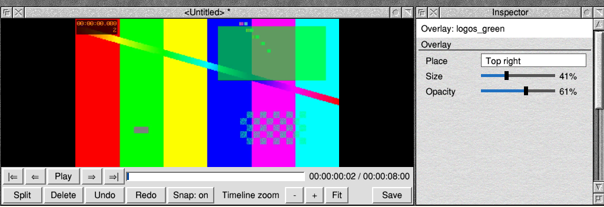
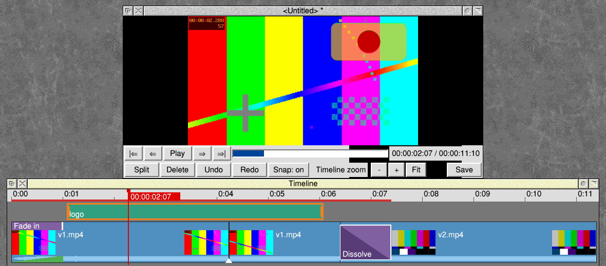
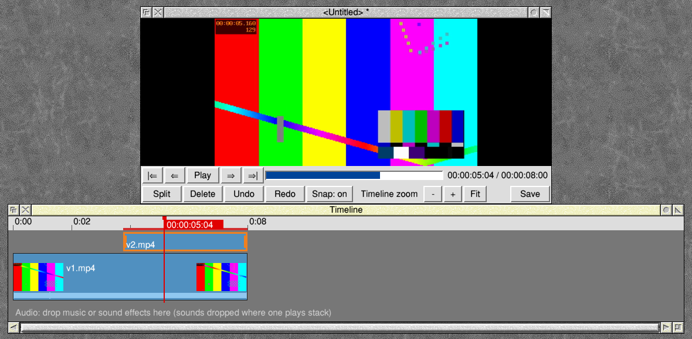
Keyframes: making an overlay move
An overlay can change while it's on screen. For example, a picture in picture can grow until it fills the frame, a logo can fade to half, or a title can slide to a corner. Each change is set at a keyframe, and ReelEdit moves the overlay smoothly from one keyframe to the next.
- Select the overlay, and put the playhead where the change should be complete.
- In the Inspector, click Keyframes so that it says On. ReelEdit makes two keyframes: one at the overlay's start, and one at the playhead.
- Change the Place, Size or Opacity. The change goes into the keyframe at the playhead.
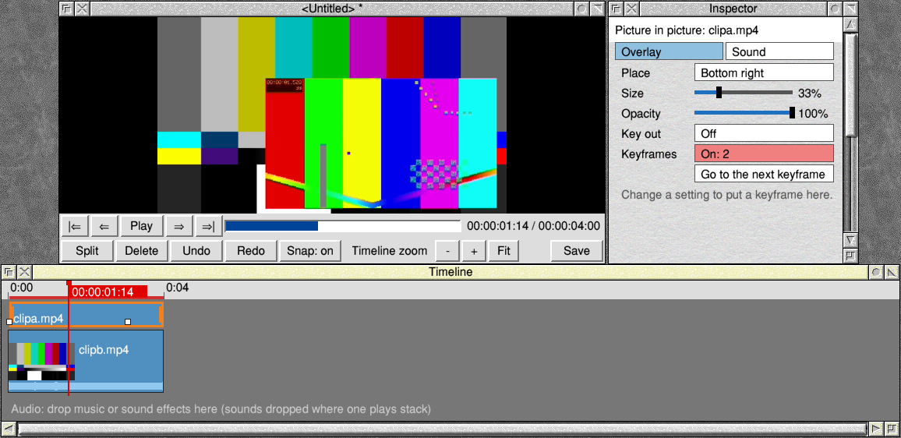
To add another keyframe, move the playhead and change a setting. Go to the next keyframe jumps the playhead from one to the next, and Delete the keyframe here takes away the one at the playhead. While Keyframes is on, Place, Size and Opacity show the settings at the playhead. Click Keyframes again to turn them off: the overlay keeps the settings of its first keyframe.
Green screen
If you've filmed someone in front of a green (or blue) sheet, you can replace the sheet with another clip. Put the green screen video on V2 over the clip you want behind it, select it, and choose Place > Full frame in the Inspector. Then set Key out to Green (or Blue). The green goes, and the clip on V1 shows through.
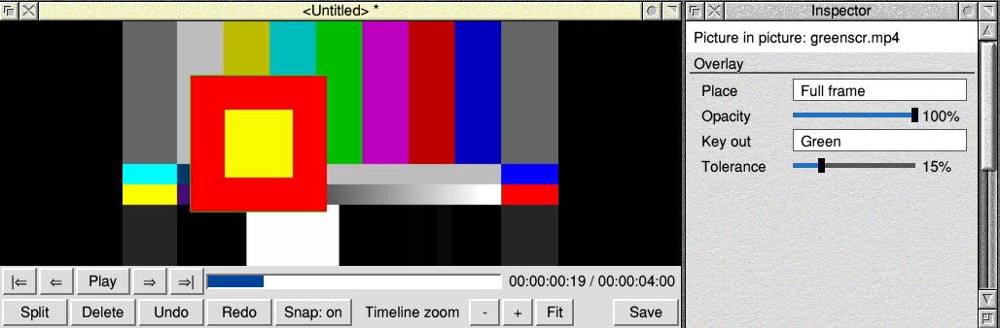
Tolerance sets how close to green a colour has to be to disappear. Turn it up if a green fringe is left round the edges, and down if parts of the person disappear too.
chroma filter (Shotcut's Chroma Key: Simple).13 Titles
Move the playhead to where the title should start and press T (or choose Edit > New title…). The Title window opens:
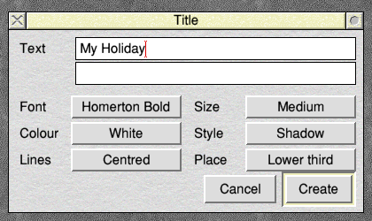
| Button | Choices |
|---|---|
| Font | Homerton, Homerton Bold, Homerton Italic, Trinity, Trinity Bold, Corpus, Corpus Bold |
| Size | Tiny, Small, Medium, Large, Huge |
| Colour | White, Yellow, Black, Red, Blue, Green |
| Style | Plain, Shadow, Outline, On a box |
| Lines | Left, Centred, Right |
| Place | Centre, the four corners, Lower third |
Type one or two lines of text and click Create. (Return takes you to the second line; Return on the second line does the same as Create.) The title goes on the titles row, at the top of the Timeline, in the lower third of the picture, for 5 seconds. The titles row appears when you make your first title.
Because titles have their own row, a title can be on screen at the same time as anything on V2. It's always shown on top, so you can put a caption over a logo or over a picture in picture.
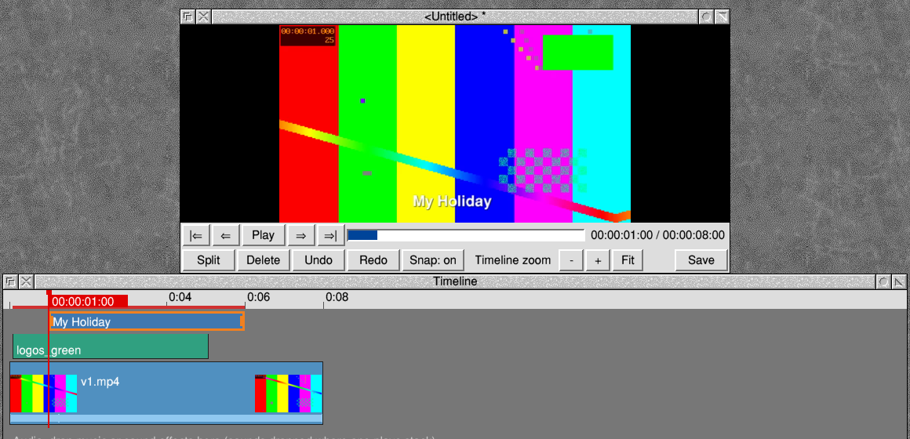
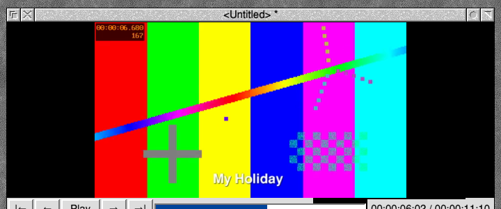
To change a title, press Menu over it and choose Edit title…. Make your changes and click Change. One press of F8 undoes all of them.
A countdown
For a film shown to an audience, a countdown at the start looks the part. Put the playhead at the start (Home) and choose Edit > Countdown at the playhead. Five seconds of a leader go in: a clock face counting down 5, 4, 3, 2, 1, with a beep at 2.
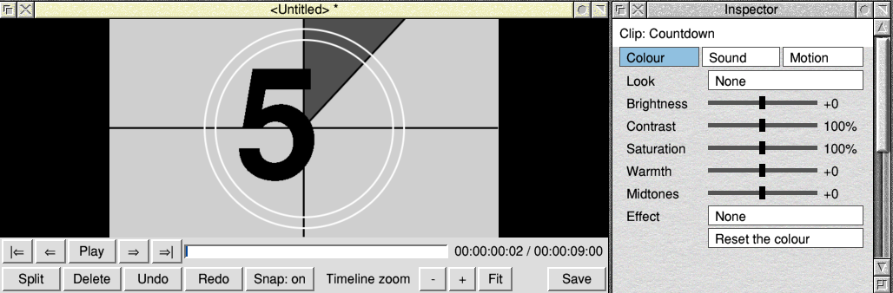
It's a clip like any other: move it, or delete it if you change your mind.
14 Speed, motion and freeze frames
Speed and reverse
Press Menu over a clip and open Speed:
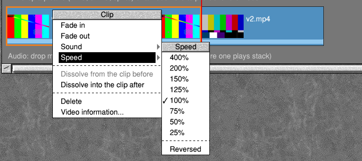
- 200% plays the clip twice as fast, so it takes half as long. 50% is slow motion, and the clip takes twice as long. The clip still starts in the same place, and everything after it moves to suit.
- Reversed plays the clip backwards; choose it again to play it forwards. If you change the speed of a reversed clip, it stays reversed.
- The clip's name shows the change, for example "v1.mp4 50%" or "v1.mp4 reversed".
Pan and zoom
A still photo on screen for five seconds can look flat. Making the picture move slowly helps: zooming in towards the middle, or panning across it. Select the clip and click Motion at the top of the Inspector.
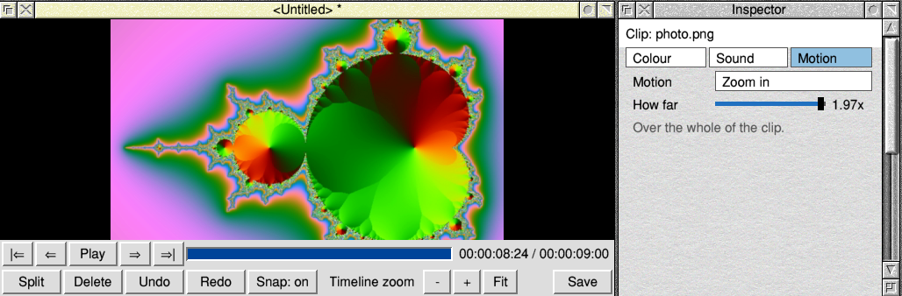
- Motion is a menu: Zoom in, Zoom out, Pan left to right, Pan right to left, Pan upwards and Pan downwards. None takes it off.
- How far sets how big the picture gets: 1.10 times (a gentle move) up to 2 times. A pan is zoomed in that far all the way, so there's room to move across.
The motion lasts the whole clip. If you trim the clip, it moves faster to fit; if you split it, each part does the whole motion.
Freeze frames
To hold one moment of a video, put the playhead on that frame and press F (or choose Edit > Freeze the frame). ReelEdit splits the clip there and puts in two seconds of that frame, held still. The rest of the clip carries on after it.
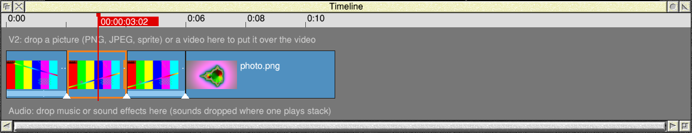
A freeze frame works like a picture: trim it to make it longer or shorter, fade it, colour it or give it a motion. It has no sound.
reeleditFreeze in the project file, with the frame's time). Shotcut doesn't know it. Pan and zoom is MLT's affine filter with a moving transition.rect, the way Shotcut's Size, Position & Rotate filter is saved (not yet tried in Shotcut).Part IV: Working FasterQuicker editing, smoother playback, saving and exporting
15 The Clips window and three-point editing
Press Ctrl-B (or choose View > Clips…) to open the Clips window. It lists the videos in your project, and any video you drop on the window itself. The list is saved with the project.
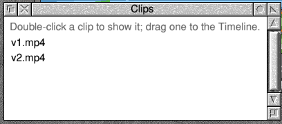
- Drag a clip from the list to the Timeline to add the whole clip.
- Double-click a clip, or click it and press Return, to show it in the Viewer as a source.
- Press Delete to take the selected clip off the list. It stays on the Timeline.
Three-point editing
This lets you pick out part of a long clip and put just that part into your film. While a source is showing, the Viewer's title starts "Source:", and the keys work on the source rather than the project:
- Play the source, and press I and O to mark the part you want. (The frame at the out mark is included.)
- Press , (comma) to insert it at the project's playhead. Whatever was there moves along to make room.
- Or press . (full stop) to overwrite: it replaces what was there, and the project stays the same length.
- The project's playhead moves to the end of the new piece, ready for the next one.
- Press Escape to go back to the project.
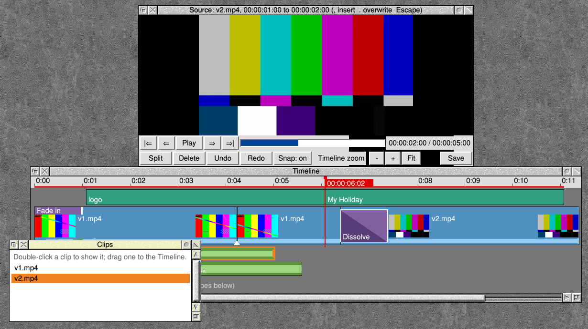
16 Smooth playback: render previews and proxies
Why playback sometimes stutters
A plain 1080p clip needs one picture decoded for each frame, which the Pi's VideoCore does in about 10 milliseconds. Picture in picture needs two, and ReelEdit can only use one VideoCore decoder, so the second picture is decoded by the ARM, which takes about 43 milliseconds. At 25 frames a second there are only 40 milliseconds per frame. Fades, dissolves, titles and speed changes add work too. To keep the picture in step with the sound, ReelEdit drops frames it can't get ready in time, so busy parts of the project look jerky.
Render previews
Press Ctrl-R (or choose Play > Render previews) and ReelEdit renders each busy stretch to a video file in the background. When you play, those stretches play from the rendered files, which is much less work. A thin bar under the ruler shows how each stretch is doing:
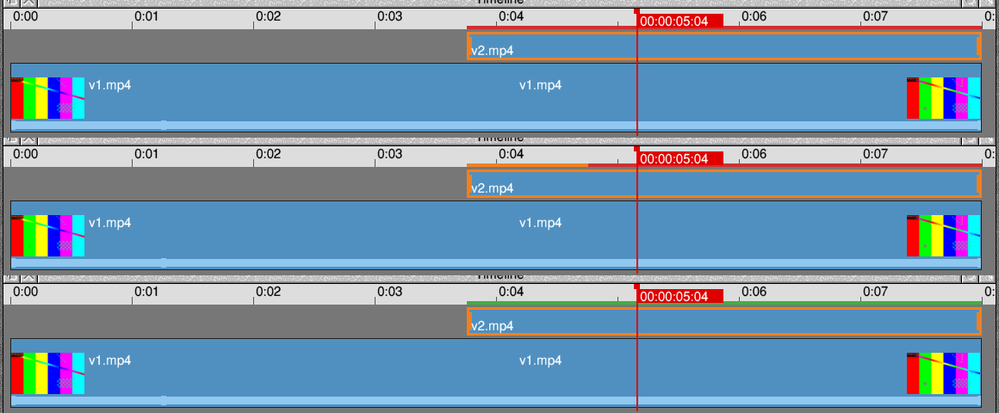
- A stretch counts as busy if it has an overlay or title, a dissolve, a fade, or a clip at a different speed. Busy stretches less than 2 seconds apart are rendered together.
- You can carry on editing while it renders. Play > Stop rendering stops it.
- If you change something in a rendered stretch, its bar turns red again; press Ctrl-R to render it again. Moving a stretch along the Timeline with a ripple edit doesn't need a new render.
Proxies
Some video is always hard work to decode: HEVC (H.265, which most phones now record), VP9, 4K, or anything else the VideoCore can't handle. For these files, ReelEdit makes a proxy automatically. A proxy is a small copy, 360 lines high with a keyframe every 5 frames, so it decodes quickly and you can jump about in it easily. While proxies are being made, the Timeline's title bar says so:
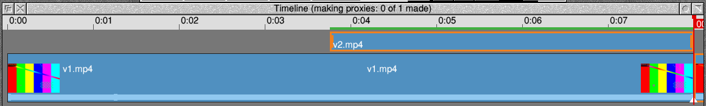
- Each proxy is used in the Viewer and on the Timeline as soon as it's ready. Clips keep their own names.
- Saving, exporting, render previews and autosave always use your original files, at full quality.
- View > Use proxies turns proxies off and on.
- Proxies are deleted when you close the editor or quit. If ReelEdit crashes they're kept, so they can be used again when you recover the project (Chapter 17).
- Making a proxy can take several minutes on a slow machine. Until it's ready, the clip plays from the original file.
How much difference do proxies make?
These figures are from a slow test machine with no VideoCore, playing 1080p clips:
| Project | Without proxies | With proxies |
|---|---|---|
| One 1080p H.264 clip | 2.4 frames a second | 9.7 frames a second |
| 1080p with a 1080p picture in picture | 2.6 frames a second | 4.4 frames a second |
| One 1080p HEVC clip | 1.9 frames a second | 6.3 frames a second |
17 Saving, autosave and recovery
Press F3 or click Save. The first time, you get the usual Save as box: drag its icon to a Filer window, or type a full file name and press Return. After that, F3 saves to the same file. To save under a different name, choose File > Save as….
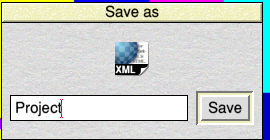
Projects are saved as MLT XML files (filetype XML). The Viewer's title bar shows the project's full path, with a star (*) after it if there are unsaved changes.
Autosave
When you have unsaved changes, ReelEdit keeps a backup copy of the project in <Choices$Write>.ReelEdit.Autosave (usually inside !Boot.Choices), updated at most every 30 seconds. It's deleted when you save, close the editor or quit. So if it's still there next time, ReelEdit didn't close properly, perhaps because of a crash or a power cut.
Recovering a project
If a backup copy is found when you open the editor, ReelEdit offers to recover it:
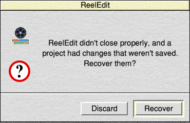
- Recover opens the project as it was when the backup was made. It's marked as unsaved, so remember to save it. Any proxies made for it are used again.
- Discard deletes the backup, along with any proxies and render previews left over.
18 Exporting your film
Press Ctrl-E (or choose File > Export…):
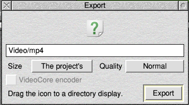
| Setting | Choices |
|---|---|
| Size | The project's own size, or 1080, 720, 480 or 360 lines. The shape of the picture stays the same. |
| Quality | Small file, Normal or High. |
| VideoCore encoder | Uses the Pi's hardware encoder, which is several times faster. It's greyed out if the hardware isn't available. |
Drag the file icon to a Filer window, or type a full file name and click Export. (The name you start with has no directory in it, so it needs one of these.) The export runs in the background, so you can carry on editing, and the window shows how far it has got. Stop cancels it and deletes the unfinished file.
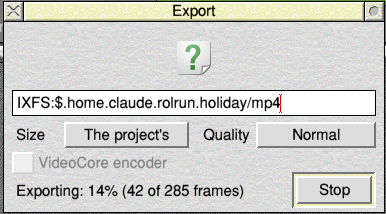
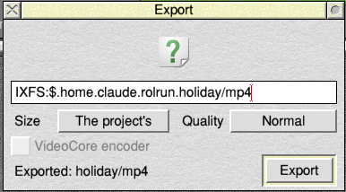
Part V: The Part of TensShort lists for quick reference
19 Ten keys to learn first
- Space: play and stop.
- J K L: backwards, stop, forwards. Press J or L again to go faster.
- Left / Right: a frame at a time. With Shift, a second at a time.
- Up / Down: the previous / next cut.
- S: split at the playhead.
- Q / W: cut off the part of the clip before / after the playhead.
- Delete: delete the selected clip and close the gap.
- D: dissolve at the nearest cut.
- F8 / F9: undo / redo.
- F3: save.
20 Ten problems and what to do about them
| Problem | What to try |
|---|---|
| No sound | Check SharedSoundBuffer and StreamManager (ssb.zip) are installed and SharedSound is loaded. Check the clip isn't muted (a red line along its bottom). |
| Playback is jerky | Press Ctrl-R to render previews, and wait for any proxies to finish (the Timeline's title bar tells you). On a Pi, check gpu_mem=128 is set. |
| Part of the film is black | Look for a fade (a purple box) or a gap on V1. |
| Nothing happened when I dropped a file | Check where you dropped it: sounds go on the audio rows, pictures on V1 or V2. A raw .m2v file is measured first ("Measuring" appears beside the transport controls). |
| Pressing E did nothing | The clips either side of the cut have no spare frames to roll into. Trim one of them first (Chapter 6). |
| "Its speed can't be changed" | Pictures have no speed, and you can't change the speed of a clip with a dissolve at either end. Delete the dissolve first. |
| "There's no room to paste it there" (or no room for a title) | V2, the titles row and the audio tracks each need an empty stretch at the playhead, inside the project. Move the playhead, or make some room. (A title doesn't need V2 to be empty.) |
| The User guide opens as a page of text, or not at all | Your computer hasn't been told to open HTML files in a web browser yet. Double-click NetSurf (it's in Apps) once, then try again. If HTML files open in Edit, ReelEdit tells you rather than showing the guide as text. |
| Exporting is slow | Tick VideoCore encoder (on a Pi with the VCHIQ module), or choose a smaller size. |
| ReelEdit crashed, or did something odd | After a crash, open ReelEdit again and choose Recover. To find out what went wrong, turn on logging from the icon bar menu (Chapter 2), do the same thing again, then look at <Wimp$ScrapDir>.ReelEditLog. Please send it to the author with your report. |
21 Ten things for experienced users
- Projects are MLT XML. ReelEdit uses Shotcut's track layout, with
store=shotcut: V1 is a playlist, and V2 and the audio tracks are marked the way Shotcut marks them. Titles have a track of their own above V2 (V3, markedshotcut:reeledit_titles); its composites are applied after V2's, so titles are always on top. melt can play the files, and Shotcut should be able to open them. Settings of ReelEdit's own (overlay place, size, opacity and fades, and the Clips list) are kept inshotcut:reeledit_*properties. - The log,
<Wimp$ScrapDir>.ReelEditLog, records edits, which decoder each clip uses, playback statistics every second, and render and proxy jobs, along with MLT's and FFmpeg's own messages. It's off as standard; the icon bar menu's Logging item turns it on, and the choice is kept in<Choices$Write>.ReelEdit.Logging. Turned on again in the same session, it adds to the file; a new session starts it afresh. For testing, setReelEdit$Logto a file name to log there from the start, or tooff; either overrides the menu at start-up. - Background jobs run in TaskWindows. Exports, render previews and proxies are made by
!RunImage -exportor-proxyin a TaskWindow, which RISC OS multitasks pre-emptively. That's why the desktop keeps working while they run. - How rendered stretches are recognised. Each busy stretch gets a fingerprint (a hash) of everything in it (clips, overlays, sounds, frame numbers and settings), measured from the start of the stretch. As long as the fingerprint matches, the rendered file is used. That's why a ripple edit earlier in the project doesn't throw previews away.
- How proxies are swapped in. When a proxy is ready, the project is rebuilt from its XML with each file's name replaced by its proxy's, and undo and redo do the same. Saving puts the original names back, so a saved project never refers to a proxy.
- Where the files go. Render previews are kept in
<Wimp$ScrapDir>.ReelEdPrvand proxies in<Wimp$ScrapDir>.ReelEdPxy, with anIndexfile recording which proxy belongs to which file. Both are cleared when you close the editor or quit, and when it opens, unless you recover a project. - One VideoCore decoder. With
gpu_mem=128a secondh264_vchiqdecoder opens but never produces a picture, so ReelEdit keeps one and passes it from clip to clip. During a dissolve or picture in picture the second video is decoded by the ARM, and that's where render previews and proxies help most. - Thumbnails and waveforms are made with FFmpeg's software decoders, so the VideoCore is left free for playback. ReelEdit makes them a little at a time when the desktop is idle, starting with what's on screen. Waveforms are drawn on a decibel scale covering 48 dB.
- Speed changes use MLT's timewarp producer (
timewarp:2:file), as Shotcut does. ReelEdit creates it through MLT's loader so that the sound is resampled to 48 kHz. Keeping the pitch the same would need the Rubber Band library, which isn't included. - Interactive help covers everything. Run !Help and point at any button, track or part of a window to see what it does and which key does the same.
Appendix: keys and menusPrint this page and keep it by the keyboard
Playing and moving about
| Key | What it does |
|---|---|
| Space | Play or stop |
| J K L | Backwards (1×, 2×, 4×), stop, forwards (1×, 2×, 4×) |
| Escape | Stop; leave a source clip; cancel measuring |
| Left / Right | Previous / next frame |
| Shift-Left / Shift-Right | A second back / forward |
| Up / Down | Previous / next cut |
| Home / Copy | Start / end |
Editing
| Key | What it does |
|---|---|
| S | Split at the playhead |
| Q / W | Cut off the part of the clip before / after the playhead |
| E | Roll the nearest cut to the playhead |
| D | Dissolve at the nearest cut |
| Delete / Shift-Delete | Delete the selection and close the gap / leave a gap |
| Ctrl-X Ctrl-C Ctrl-V | Cut, copy, paste at the playhead |
| Ctrl-Z | Clear the selection |
| F8 / F9 | Undo / redo |
| T | New title |
| F | Freeze the frame at the playhead |
| I / O | Set the in / out mark |
| Shift-I / Shift-O | Go to the in / out mark |
| Return | Play from in to out (in the Clips window: show the clip as a source) |
| ' / ; | Extract / lift the marked stretch |
| , / . | Insert / overwrite the marked part of a source at the playhead |
View, files and the rest
| Key | What it does |
|---|---|
| + / - | Zoom the Timeline in / out |
| Shift-Z or \ | Fit the whole project in the Timeline |
| Ctrl + scroll wheel | Zoom around the pointer |
| N | Snapping on / off |
| Ctrl-B | The Clips window |
| Ctrl-I | The Inspector (close or open it) |
| Ctrl-R | Render previews |
| Ctrl-E | Export |
| F3 | Save |
| F1 | Open this guide |
The mouse on the Timeline
| Action | Where | Result |
|---|---|---|
| Click / drag | The ruler | Move the playhead / scrub |
| Click | A clip, overlay or sound | Select it |
| Drag | The middle of one | Move it |
| Drag | One of its ends | Trim it (ripple) |
| Ctrl-drag | The end of a clip | Roll the cut there |
| Drag | The white triangle at the bottom of a cut | Make a dissolve as long as the drag |
| Drag | The edge of a fade box, or the end of a dissolve | Make it longer or shorter |
| Menu | A clip, overlay or sound | Its menu |
The menus
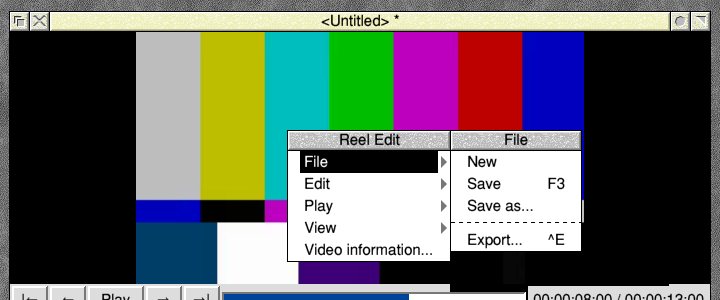
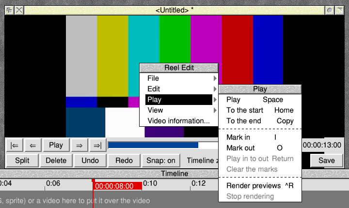
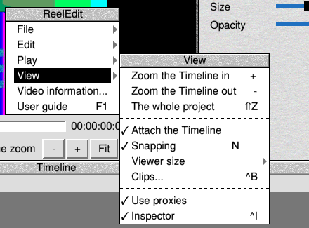
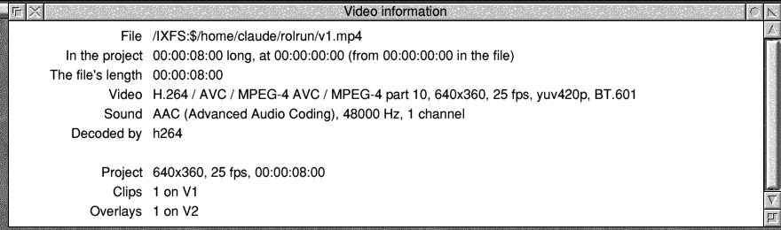
ReelEdit is free software (GPL version 2 or later) by Andrew Youll. This guide is for ReelEdit 0.3 Beta. The screenshots were taken on RISC OS 5 running in the RISC OS for Linux testbed.